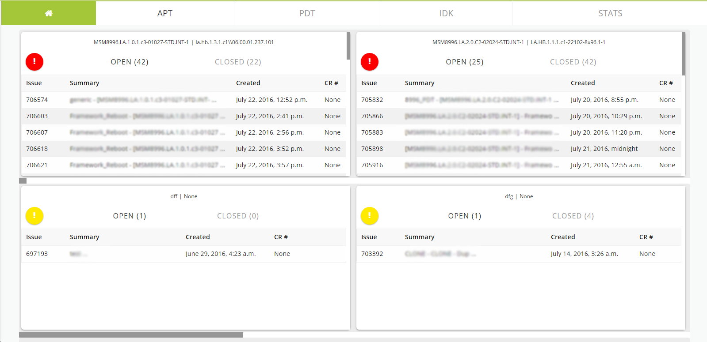

Stability Dashboard
The Stability Dashboard is a productivity tool for the employees at Qualcomm to quickly see and update important data on Jira issues. The pictures below are of the project about halfway through completion. Unfortunately I forgot to take screen shots when I was nearing the end of my internship.
SPECIFIC FEATURES
 See duplicate issues and master issue
See duplicate issues and master issue- View issues grouped by meta/apps ID combination
- View issues grouped by Open or Closed Issues
- Bulk reject issues within a meta/apps ID group
- Bulk Comment on issues within a meta/apps ID group
- Bulk priority change issues based on meta/apps ID group
- Role: Design and Development
- Employer: Qualcomm
- Year: 2015
- Tools: HTML, CSS, PHP, Javascript, MySQL, Python

All issues are associated with a "meta id" and an "apps id". Issues with the same meta and app id are combined into a single priority box. A red exclamation point indicates the highest priority issues, a yellow exclamation indicates mid-level issues, and a green exclamation point indicates a group of low priority issues.